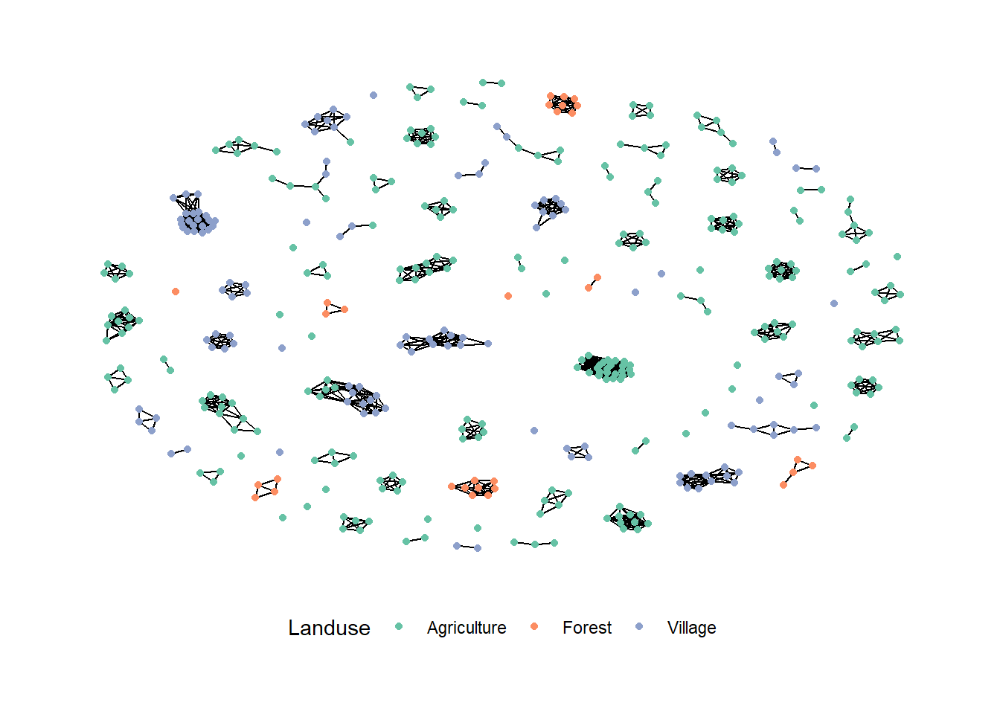
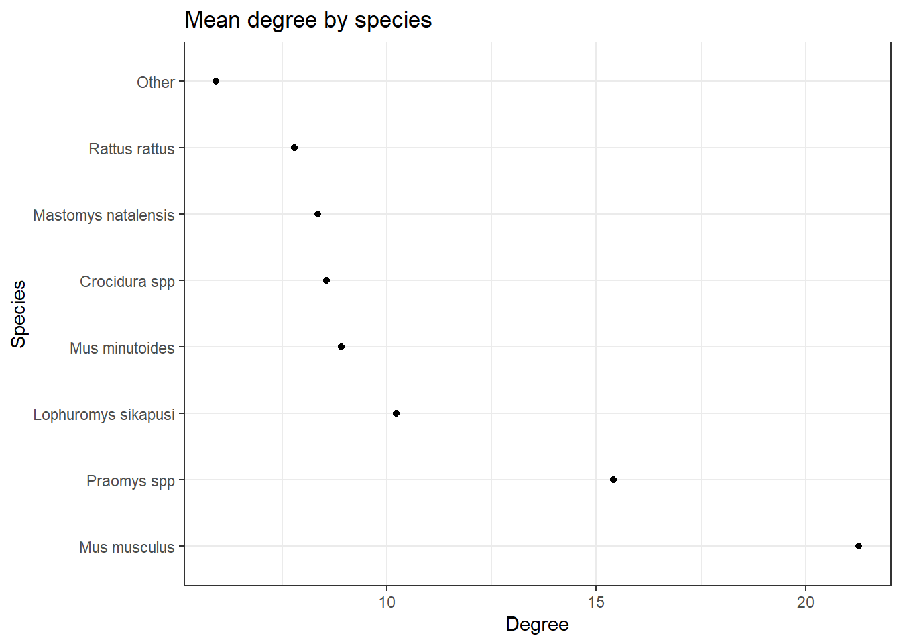

source(here::here("R", "00_setup.R"))Loading required package: pacmangraph_landuse <- read_rds(here("data", "rodent_network.rds"))Load packages and data.
source(here::here("R", "00_setup.R"))Loading required package: pacmangraph_landuse <- read_rds(here("data", "rodent_network.rds"))Convert the data to graph and network objects. Species with less than 10 individuals will be grouped as Other. The period of trapping is converted to the Dry or Wet season and village_loc is produced to code for Urban and Rural villages.
rodent_graph <- bind_graphs(graph_landuse$observed_50)
# Species with more than 10 nodes
retain_rodents <- names(table(V(rodent_graph)$Species))[table(V(rodent_graph)$Species) > 10]
rodent_graph <- rodent_graph %>%
mutate(Season = case_when(Visit %in% c("1", "2", "5", "6") ~ "Dry",
TRUE ~ "Wet"),
Species = case_when(!Species %in% retain_rodents ~ "Other",
TRUE ~ Species),
Village_loc = case_when(Village == "Lambayama" ~ "Urban",
TRUE ~ "Rural"),
Landuse = case_when(Landuse == "Secondary_forest" ~ "Forest",
TRUE ~ Landuse),
Serostatus = case_when(ELISA == "Equivocal" ~ "Negative",
TRUE ~ ELISA))
rodent_graph <- igraph::simplify(as.igraph(rodent_graph))
rodent_net <- asNetwork(rodent_graph)
# Rodent connected is a subgraph of non-isolated nodes
rodent_connected <- as_tbl_graph(rodent_graph) %>%
activate(edges) %>%
filter(from != to) %>%
activate(nodes) %>%
filter(!node_is_isolated())The following is the summary of the network.
options(max.print = 10)
summary(rodent_net)Network attributes:
vertices = 412
directed = FALSE
hyper = FALSE
loops = FALSE
multiple = FALSE
bipartite = FALSE
total edges = 1120
missing edges = 0
non-missing edges = 1120
density = 0.01322845
Vertex attributes:
Age:
character valued attribute
attribute summary:
Adult Juvenile Not_known
333 62 17
Contact.radius:
character valued attribute
attribute summary:
50m
412
ELISA:
character valued attribute
attribute summary:
Negative Positive
392 20
Landuse:
character valued attribute
attribute summary:
Agriculture Forest Village
259 31 122
Month:
numeric valued attribute
attribute summary:
Min. 1st Qu. Median Mean 3rd Qu. Max.
1.000 4.000 4.000 5.733 10.000 12.000
Season:
character valued attribute
attribute summary:
Dry Wet
274 138
Serostatus:
character valued attribute
attribute summary:
Negative Positive
392 20
Sex:
character valued attribute
attribute summary:
Female Male
208 204
Species:
character valued attribute
attribute summary:
Crocidura spp Lophuromys sikapusi Mastomys natalensis Mus minutoides
83 44 75 35
Mus musculus Other Praomys spp Rattus rattus
41 28 68 38
vertex.names:
character valued attribute
412 valid vertex names
Village:
character valued attribute
attribute summary:
Baiama Bambawo Lalehun Lambayama Seilama
45 13 103 61 190
Village.locations:
character valued attribute
attribute summary:
Rural Urban
351 61
Village_loc:
character valued attribute
attribute summary:
Rural Urban
351 61
Visit:
character valued attribute
attribute summary:
1 2 3 4 5 6
45 72 58 80 99 58
Year:
numeric valued attribute
attribute summary:
Min. 1st Qu. Median Mean 3rd Qu. Max.
2020 2021 2021 2021 2022 2022
No edge attributes
Network edgelist matrix:
[,1] [,2]
[1,] 3 4
[2,] 3 13
[3,] 4 13
[4,] 5 7
[5,] 5 10
[ reached getOption("max.print") -- omitted 1115 rows ]options(max.print = 500)There are 412 individual rodents, with 339 ties between individuals for an overall density of 0.004. The attributes that will be used will include species, landuse, season, serostatus and village_loc. We have 7 named species, with one other category. The most commonly trapped species were the Crocidura, followed by Mastomys natalensis, Praomys and Lophuromys. The majority of individuals were obtained from Agricultural settings, followed by villages (both inside and outside of homes) with few individuals trapped in the forests. More rodents were trapped in the dry season, than the wet. 20 individuals were positive for Lassa mammarenavirus antibodies.
This produces a species graph which highlights the clustering of Mus musculus and Mastomys natalensis individuals. The majority of individuals do not have ties to any other individuals.

This graph highlights the locations of the villages from where rodents were trapped. The urban village was Lambayama and here rodents were trapped at greater rates in close proximity to others.

The largest component of the network are from rodents trapped in agricultural settings, with smaller components from villages. The largest component from the forest is 3 individuals.

Finally this graph shows the ties between individuals and their serostatus.
# Network descriptives
rodent_net_descriptives <- list("nodes" = length(rodent_net %v% "vertex.names"),
"mean_degree" = mean(degree(rodent_net, gmode = "graph")),
"sd_degree" = sd(degree(rodent_net, gmode = "graph")),
"degree_table" = table(degree(rodent_net, gmode = "graph")),
"triad_table" = triad.census(rodent_net, mode = "graph"),
"density" = graph.density(asIgraph(rodent_net)))The mean degree of the graph is 5.44, with a standard deviation of 5.42. The distribution of degrees of each node is shown below, compared to a random graph of the same structure. The density of the network, the proportion of all possible ties observed is 0.013.
We can construct a random graph with the same number of nodes and tie density to investigate the distribution of degree in the rodent data compared to a random network of similar characteristics.
This shows that more isolated nodes are present than would be expected with a longer right tail of higher degree nodes.
Comparing dyadwise and edgewise shared partner distributions can highlight the clustering in the rodent network.
Starting maximum pseudolikelihood estimation (MPLE):Evaluating the predictor and response matrix.Maximizing the pseudolikelihood.Finished MPLE.Stopping at the initial estimate.Evaluating log-likelihood at the estimate.
Starting maximum pseudolikelihood estimation (MPLE):
Evaluating the predictor and response matrix.
Maximizing the pseudolikelihood.
Finished MPLE.
Stopping at the initial estimate.
Evaluating log-likelihood at the estimate. 
The observed rodent network has more network members with multiple DSP and ESP compared with the random network. The clustering can also be seen by looking at the mixing matrices.
mixingmatrix(rodent_net, "Species") Crocidura spp Lophuromys sikapusi Mastomys natalensis
Crocidura spp 50 54 34
Lophuromys sikapusi 54 30 14
Mastomys natalensis 34 14 83
Mus minutoides 31 26 12
Mus musculus 20 0 3
Other 14 12 11
Praomys spp 81 58 23
Rattus rattus 21 1 50
Mus minutoides Mus musculus Other Praomys spp Rattus rattus
Crocidura spp 31 20 14 81 21
Lophuromys sikapusi 26 0 12 58 1
Mastomys natalensis 12 3 11 23 50
Mus minutoides 13 0 2 55 4
Mus musculus 0 204 0 0 5
Other 2 0 7 25 5
Praomys spp 55 0 25 134 14
Rattus rattus 4 5 5 14 24Note: Marginal totals can be misleading for undirected mixing matrices.mixingmatrix(rodent_net, "Village_loc") Rural Urban
Rural 861 0
Urban 0 259Note: Marginal totals can be misleading for undirected mixing matrices.mixingmatrix(rodent_net, "Landuse") Agriculture Forest Village
Agriculture 678 0 17
Forest 0 64 0
Village 17 0 361Note: Marginal totals can be misleading for undirected mixing matrices.mixingmatrix(rodent_net, "Serostatus") Negative Positive
Negative 1072 46
Positive 46 2Note: Marginal totals can be misleading for undirected mixing matrices.We can investigate the effect of node characteristics on degree. Of primary interest is the effect of species.
species <- rodent_net %v% "Species"
deg <- degree(rodent_net)
tibble(Species = species,
Degree = deg) %>%
group_by(Species) %>%
summarise(Degree = mean(Degree)) %>%
ungroup() %>%
arrange(-Degree) %>%
mutate(Species = fct_inorder(Species)) %>%
ggplot() +
geom_point(aes(x = Species, y = Degree)) +
labs(title = "Mean degree by species") +
coord_flip() +
theme_bw()
The species with the highest mean degree is Mus.
We can build a model by iteratively adding further complexity to address the following hypothesis.
source(here("R", "modified_functions.R"))
summary.ergm.david(null_random)Call:
ergm(formula = random_net ~ edges)
Maximum Likelihood Results:
Estimate Std. Error MCMC % Wald OR Lower Upper Pr(>|z|)
edges -4.35928 0.03078 0 -141.6 0.013 0.012 0.014 <1e-04 ***
---
Signif. codes: 0 '***' 0.001 '**' 0.01 '*' 0.05 '.' 0.1 ' ' 1
Null Deviance: 117372 on 84666 degrees of freedom
Residual Deviance: 11472 on 84665 degrees of freedom
AIC: 11474 BIC: 11483 (Smaller is better. MC Std. Err. = 0)null_rodent <- ergm(rodent_net ~ edges)Starting maximum pseudolikelihood estimation (MPLE):Evaluating the predictor and response matrix.Maximizing the pseudolikelihood.Finished MPLE.Stopping at the initial estimate.Evaluating log-likelihood at the estimate. summary.ergm.david(null_rodent)Call:
ergm(formula = rodent_net ~ edges)
Maximum Likelihood Results:
Estimate Std. Error MCMC % Wald OR Lower Upper Pr(>|z|)
edges -4.31207 0.03008 0 -143.4 0.013 0.013 0.014 <1e-04 ***
---
Signif. codes: 0 '***' 0.001 '**' 0.01 '*' 0.05 '.' 0.1 ' ' 1
Null Deviance: 117372 on 84666 degrees of freedom
Residual Deviance: 11914 on 84665 degrees of freedom
AIC: 11916 BIC: 11925 (Smaller is better. MC Std. Err. = 0)main_effects_1 <- ergm(rodent_net ~ edges + nodefactor("Species", levels = c("Crocidura spp", "Mastomys natalensis", "Praomys spp", "Lophuromys sikapusi", "Mus musculus", "Rattus rattus", "Mus minutoides")))Starting maximum pseudolikelihood estimation (MPLE):
Evaluating the predictor and response matrix.
Maximizing the pseudolikelihood.
Finished MPLE.
Stopping at the initial estimate.
Evaluating log-likelihood at the estimate. summary.ergm.david(main_effects_1)Call:
ergm(formula = rodent_net ~ edges + nodefactor("Species", levels = c("Crocidura spp",
"Mastomys natalensis", "Praomys spp", "Lophuromys sikapusi",
"Mus musculus", "Rattus rattus", "Mus minutoides")))
Maximum Likelihood Results:
Estimate Std. Error MCMC % Wald OR
edges -5.5424 0.2186 0 -25.357 0.004
nodefactor.Species.Crocidura spp 0.3710 0.1226 0 3.027 1.449
nodefactor.Species.Mastomys natalensis 0.3461 0.1241 0 2.788 1.414
nodefactor.Species.Praomys spp 0.9712 0.1189 0 8.169 2.641
nodefactor.Species.Lophuromys sikapusi 0.5524 0.1292 0 4.276 1.737
nodefactor.Species.Mus musculus 1.3031 0.1207 0 10.797 3.681
nodefactor.Species.Rattus rattus 0.2761 0.1379 0 2.002 1.318
nodefactor.Species.Mus minutoides 0.4128 0.1366 0 3.021 1.511
Lower Upper Pr(>|z|)
edges 0.003 0.006 < 1e-04 ***
nodefactor.Species.Crocidura spp 1.140 1.843 0.00247 **
nodefactor.Species.Mastomys natalensis 1.108 1.803 0.00530 **
nodefactor.Species.Praomys spp 2.092 3.334 < 1e-04 ***
nodefactor.Species.Lophuromys sikapusi 1.349 2.238 < 1e-04 ***
nodefactor.Species.Mus musculus 2.905 4.663 < 1e-04 ***
nodefactor.Species.Rattus rattus 1.006 1.727 0.04525 *
nodefactor.Species.Mus minutoides 1.156 1.975 0.00252 **
---
Signif. codes: 0 '***' 0.001 '**' 0.01 '*' 0.05 '.' 0.1 ' ' 1
Null Deviance: 117372 on 84666 degrees of freedom
Residual Deviance: 11582 on 84658 degrees of freedom
AIC: 11598 BIC: 11673 (Smaller is better. MC Std. Err. = 0)edges_coeff <- round(unname(main_effects_1$coefficients["edges"]), 3)
mus_coeff <- round(unname(main_effects_1$coefficients["nodefactor.Species.Mus musculus"]), 3)
mas_coeff <- round(unname(main_effects_1$coefficients["nodefactor.Species.Mastomys natalensis"]), 3)
simple_species_1 <- round(plogis(q = (edges_coeff * 1 + mus_coeff * 2)), 2)
simple_species_2 <- round(plogis(q = (edges_coeff * 1 + mus_coeff * 1 + mas_coeff * 1)), 3)
simple_species_3 <- round(plogis(q = (edges_coeff * 1 + mas_coeff * 2)), 3)The first model is the random model, which matches the null rodent model for the Odds of a tie forming:
The probability of ties between network members can be calculated.
These models are overly simplistic as they do not count for homophily which is important in this context.
Continuing to assume dyadic independence we can add differential homophily terms to the models.
homophily_1 <- ergm(rodent_net ~ edges + nodefactor("Species", levels = c("Crocidura spp", "Mastomys natalensis", "Praomys spp", "Lophuromys sikapusi", "Mus musculus", "Rattus rattus", "Mus minutoides")) + nodematch("Species", levels = c("Crocidura spp", "Mastomys natalensis", "Praomys spp", "Lophuromys sikapusi", "Mus musculus", "Rattus rattus", "Mus minutoides"), diff = TRUE))Starting maximum pseudolikelihood estimation (MPLE):Evaluating the predictor and response matrix.Maximizing the pseudolikelihood.Finished MPLE.Stopping at the initial estimate.Evaluating log-likelihood at the estimate. summary.ergm.david(homophily_1)Call:
ergm(formula = rodent_net ~ edges + nodefactor("Species", levels = c("Crocidura spp",
"Mastomys natalensis", "Praomys spp", "Lophuromys sikapusi",
"Mus musculus", "Rattus rattus", "Mus minutoides")) + nodematch("Species",
levels = c("Crocidura spp", "Mastomys natalensis", "Praomys spp",
"Lophuromys sikapusi", "Mus musculus", "Rattus rattus",
"Mus minutoides"), diff = TRUE))
Maximum Likelihood Results:
Estimate Std. Error MCMC % Wald
edges -5.05845 0.21809 0 -23.194
nodefactor.Species.Crocidura spp 0.31160 0.13317 0 2.340
nodefactor.Species.Mastomys natalensis -0.29088 0.14166 0 -2.053
nodefactor.Species.Praomys spp 0.51886 0.13316 0 3.897
nodefactor.Species.Lophuromys sikapusi 0.38403 0.13936 0 2.756
nodefactor.Species.Mus musculus -1.45595 0.22073 0 -6.596
nodefactor.Species.Rattus rattus -0.04077 0.15222 0 -0.268
nodefactor.Species.Mus minutoides 0.33639 0.14476 0 2.324
nodematch.Species.Crocidura spp 0.22966 0.19831 0 1.158
nodematch.Species.Mastomys natalensis 2.16102 0.20538 0 10.522
nodematch.Species.Praomys spp 1.24814 0.16410 0 7.606
nodematch.Species.Lophuromys sikapusi 0.87157 0.24788 0 3.516
nodematch.Species.Mus musculus 6.86523 0.38925 0 17.637
nodematch.Species.Rattus rattus 1.79741 0.29258 0 6.143
nodematch.Species.Mus minutoides 0.58415 0.33474 0 1.745
OR Lower Upper Pr(>|z|)
edges 0.006 0.004 0.010 < 1e-04 ***
nodefactor.Species.Crocidura spp 1.366 1.052 1.773 0.019291 *
nodefactor.Species.Mastomys natalensis 0.748 0.566 0.987 0.040037 *
nodefactor.Species.Praomys spp 1.680 1.294 2.181 < 1e-04 ***
nodefactor.Species.Lophuromys sikapusi 1.468 1.117 1.929 0.005859 **
nodefactor.Species.Mus musculus 0.233 0.151 0.359 < 1e-04 ***
nodefactor.Species.Rattus rattus 0.960 0.712 1.294 0.788857
nodefactor.Species.Mus minutoides 1.400 1.054 1.859 0.020138 *
nodematch.Species.Crocidura spp 1.258 0.853 1.856 0.246844
nodematch.Species.Mastomys natalensis 8.680 5.804 12.982 < 1e-04 ***
nodematch.Species.Praomys spp 3.484 2.526 4.806 < 1e-04 ***
nodematch.Species.Lophuromys sikapusi 2.391 1.471 3.886 0.000438 ***
nodematch.Species.Mus musculus 958.364 446.882 2055.263 < 1e-04 ***
nodematch.Species.Rattus rattus 6.034 3.401 10.707 < 1e-04 ***
nodematch.Species.Mus minutoides 1.793 0.931 3.456 0.080969 .
---
Signif. codes: 0 '***' 0.001 '**' 0.01 '*' 0.05 '.' 0.1 ' ' 1
Null Deviance: 117372 on 84666 degrees of freedom
Residual Deviance: 10402 on 84651 degrees of freedom
AIC: 10432 BIC: 10572 (Smaller is better. MC Std. Err. = 0)edges_coeff <- round(unname(homophily_1$coefficients["edges"]), 3)
mus_coeff <- round(unname(homophily_1$coefficients["nodefactor.Species.Mus musculus"]), 3)
mus_homo_coeff <- round(unname(homophily_1$coefficients["nodematch.Species.Mus musculus"]), 3)
mas_coeff <- round(unname(homophily_1$coefficients["nodefactor.Species.Mastomys natalensis"]), 3)
mas_homo_coeff <- round(unname(homophily_1$coefficients["nodematch.Species.Mastomys natalensis"]), 3)
homophily_species_4 <- round(plogis(q = (edges_coeff * 1 + mus_coeff * 2 + mus_homo_coeff * 1)), 3)
homophily_species_5 <- round(plogis(q = (edges_coeff * 1 + mus_coeff * 1 + mas_coeff * 1)), 3)
homophily_species_6 <- round(plogis(q = (edges_coeff * 1 + mas_coeff * 2 + mas_homo_coeff * 1)), 3)The probability of ties between network members can be calculated for the differential homophily models.
Landuse type, village location (Urban/Rural) and Season are likely important components of these models. We can add Landuse type and village location in as nodematch terms as there is expected to be clustering of species or homophily within these locations. Season may or may not be a clustering term as it may be that all species respond to changing seasons in the same way. For the first model season will be added in as nodefactor, and for the second nodematch. The model with the lowest AIC will then be used.
add_terms_species_1 <- ergm(rodent_net ~ edges +
nodefactor("Species", levels = c("Crocidura spp", "Mastomys natalensis", "Praomys spp", "Lophuromys sikapusi", "Mus musculus", "Rattus rattus", "Mus minutoides")) +
nodematch("Species", levels = c("Crocidura spp", "Mastomys natalensis", "Praomys spp", "Lophuromys sikapusi", "Mus musculus", "Rattus rattus", "Mus minutoides"), diff = TRUE) +
nodefactor("Season", levels = "Dry") +
nodematch("Village_loc", levels = "Rural", diff = TRUE) +
nodematch("Landuse", levels = c("Agriculture", "Village"), diff = TRUE))Starting maximum pseudolikelihood estimation (MPLE):Evaluating the predictor and response matrix.Maximizing the pseudolikelihood.Finished MPLE.Stopping at the initial estimate.Evaluating log-likelihood at the estimate. summary.ergm.david(add_terms_species_1)Call:
ergm(formula = rodent_net ~ edges + nodefactor("Species", levels = c("Crocidura spp",
"Mastomys natalensis", "Praomys spp", "Lophuromys sikapusi",
"Mus musculus", "Rattus rattus", "Mus minutoides")) + nodematch("Species",
levels = c("Crocidura spp", "Mastomys natalensis", "Praomys spp",
"Lophuromys sikapusi", "Mus musculus", "Rattus rattus",
"Mus minutoides"), diff = TRUE) + nodefactor("Season",
levels = "Dry") + nodematch("Village_loc", levels = "Rural",
diff = TRUE) + nodematch("Landuse", levels = c("Agriculture",
"Village"), diff = TRUE))
Maximum Likelihood Results:
Estimate Std. Error MCMC % Wald
edges -7.53108 0.31387 0 -23.994
nodefactor.Species.Crocidura spp 0.06579 0.13481 0 0.488
nodefactor.Species.Mastomys natalensis -0.63890 0.14332 0 -4.458
nodefactor.Species.Praomys spp 0.27069 0.13443 0 2.014
nodefactor.Species.Lophuromys sikapusi -0.04261 0.14103 0 -0.302
nodefactor.Species.Mus musculus -0.45447 0.30276 0 -1.501
nodefactor.Species.Rattus rattus -0.04301 0.16322 0 -0.264
nodefactor.Species.Mus minutoides -0.03249 0.14703 0 -0.221
nodematch.Species.Crocidura spp 0.22907 0.19940 0 1.149
nodematch.Species.Mastomys natalensis 2.10394 0.20783 0 10.124
nodematch.Species.Praomys spp 1.23427 0.16594 0 7.438
nodematch.Species.Lophuromys sikapusi 0.76916 0.24895 0 3.090
nodematch.Species.Mus musculus 4.19349 0.44035 0 9.523
nodematch.Species.Rattus rattus 0.38073 0.29946 0 1.271
nodematch.Species.Mus minutoides 0.38331 0.33605 0 1.141
nodefactor.Season.Dry 0.14211 0.05086 0 2.794
nodematch.Village_loc.Rural 1.19771 0.20051 0 5.973
nodematch.Landuse.Agriculture 2.12799 0.12240 0 17.386
nodematch.Landuse.Village 3.04914 0.15161 0 20.112
OR Lower Upper Pr(>|z|)
edges 0.001 0.000 0.001 < 1e-04 ***
nodefactor.Species.Crocidura spp 1.068 0.820 1.391 0.62554
nodefactor.Species.Mastomys natalensis 0.528 0.399 0.699 < 1e-04 ***
nodefactor.Species.Praomys spp 1.311 1.007 1.706 0.04405 *
nodefactor.Species.Lophuromys sikapusi 0.958 0.727 1.263 0.76254
nodefactor.Species.Mus musculus 0.635 0.351 1.149 0.13333
nodefactor.Species.Rattus rattus 0.958 0.696 1.319 0.79215
nodefactor.Species.Mus minutoides 0.968 0.726 1.291 0.82512
nodematch.Species.Crocidura spp 1.257 0.851 1.859 0.25064
nodematch.Species.Mastomys natalensis 8.198 5.455 12.321 < 1e-04 ***
nodematch.Species.Praomys spp 3.436 2.482 4.757 < 1e-04 ***
nodematch.Species.Lophuromys sikapusi 2.158 1.325 3.515 0.00200 **
nodematch.Species.Mus musculus 66.254 27.950 157.051 < 1e-04 ***
nodematch.Species.Rattus rattus 1.463 0.814 2.632 0.20358
nodematch.Species.Mus minutoides 1.467 0.759 2.835 0.25402
nodefactor.Season.Dry 1.153 1.043 1.274 0.00521 **
nodematch.Village_loc.Rural 3.313 2.236 4.907 < 1e-04 ***
nodematch.Landuse.Agriculture 8.398 6.607 10.675 < 1e-04 ***
nodematch.Landuse.Village 21.097 15.674 28.398 < 1e-04 ***
---
Signif. codes: 0 '***' 0.001 '**' 0.01 '*' 0.05 '.' 0.1 ' ' 1
Null Deviance: 117372 on 84666 degrees of freedom
Residual Deviance: 9650 on 84647 degrees of freedom
AIC: 9688 BIC: 9866 (Smaller is better. MC Std. Err. = 0)add_terms_species_2 <- ergm(rodent_net ~ edges +
nodefactor("Species", levels = c("Crocidura spp", "Mastomys natalensis", "Praomys spp", "Lophuromys sikapusi", "Mus musculus", "Rattus rattus", "Mus minutoides")) +
nodematch("Species", levels = c("Crocidura spp", "Mastomys natalensis", "Praomys spp", "Lophuromys sikapusi", "Mus musculus", "Rattus rattus", "Mus minutoides"), diff = TRUE) +
nodematch("Season", levels = "Dry", diff = TRUE) +
nodematch("Village_loc", levels = "Rural", diff = TRUE) +
nodematch("Landuse", levels = c("Agriculture", "Village"), diff = TRUE))Starting maximum pseudolikelihood estimation (MPLE):
Evaluating the predictor and response matrix.
Maximizing the pseudolikelihood.
Finished MPLE.
Stopping at the initial estimate.
Evaluating log-likelihood at the estimate. summary.ergm.david(add_terms_species_2)Call:
ergm(formula = rodent_net ~ edges + nodefactor("Species", levels = c("Crocidura spp",
"Mastomys natalensis", "Praomys spp", "Lophuromys sikapusi",
"Mus musculus", "Rattus rattus", "Mus minutoides")) + nodematch("Species",
levels = c("Crocidura spp", "Mastomys natalensis", "Praomys spp",
"Lophuromys sikapusi", "Mus musculus", "Rattus rattus",
"Mus minutoides"), diff = TRUE) + nodematch("Season",
levels = "Dry", diff = TRUE) + nodematch("Village_loc", levels = "Rural",
diff = TRUE) + nodematch("Landuse", levels = c("Agriculture",
"Village"), diff = TRUE))
Maximum Likelihood Results:
Estimate Std. Error MCMC % Wald
edges -7.955912 0.311740 0 -25.521
nodefactor.Species.Crocidura spp 0.207360 0.135013 0 1.536
nodefactor.Species.Mastomys natalensis -0.621936 0.143619 0 -4.330
nodefactor.Species.Praomys spp 0.288247 0.134819 0 2.138
nodefactor.Species.Lophuromys sikapusi -0.005219 0.141636 0 -0.037
nodefactor.Species.Mus musculus -0.413918 0.302756 0 -1.367
nodefactor.Species.Rattus rattus -0.015404 0.164081 0 -0.094
nodefactor.Species.Mus minutoides 0.064586 0.147470 0 0.438
nodematch.Species.Crocidura spp 0.230529 0.200183 0 1.152
nodematch.Species.Mastomys natalensis 2.138404 0.208399 0 10.261
nodematch.Species.Praomys spp 1.257086 0.166826 0 7.535
nodematch.Species.Lophuromys sikapusi 0.743083 0.249952 0 2.973
nodematch.Species.Mus musculus 4.445242 0.441111 0 10.077
nodematch.Species.Rattus rattus 0.355359 0.301340 0 1.179
nodematch.Species.Mus minutoides 0.389452 0.337379 0 1.154
nodematch.Season.Dry 1.283369 0.077595 0 16.539
nodematch.Village_loc.Rural 0.859475 0.201389 0 4.268
nodematch.Landuse.Agriculture 2.138813 0.122787 0 17.419
nodematch.Landuse.Village 3.082453 0.152163 0 20.258
OR Lower Upper Pr(>|z|)
edges 0.000 0.000 0.001 < 1e-04 ***
nodefactor.Species.Crocidura spp 1.230 0.944 1.603 0.12457
nodefactor.Species.Mastomys natalensis 0.537 0.405 0.711 < 1e-04 ***
nodefactor.Species.Praomys spp 1.334 1.024 1.738 0.03251 *
nodefactor.Species.Lophuromys sikapusi 0.995 0.754 1.313 0.97060
nodefactor.Species.Mus musculus 0.661 0.365 1.197 0.17157
nodefactor.Species.Rattus rattus 0.985 0.714 1.358 0.92520
nodefactor.Species.Mus minutoides 1.067 0.799 1.424 0.66142
nodematch.Species.Crocidura spp 1.259 0.851 1.864 0.24949
nodematch.Species.Mastomys natalensis 8.486 5.640 12.767 < 1e-04 ***
nodematch.Species.Praomys spp 3.515 2.535 4.875 < 1e-04 ***
nodematch.Species.Lophuromys sikapusi 2.102 1.288 3.431 0.00295 **
nodematch.Species.Mus musculus 85.220 35.897 202.314 < 1e-04 ***
nodematch.Species.Rattus rattus 1.427 0.790 2.575 0.23829
nodematch.Species.Mus minutoides 1.476 0.762 2.860 0.24836
nodematch.Season.Dry 3.609 3.100 4.202 < 1e-04 ***
nodematch.Village_loc.Rural 2.362 1.592 3.505 < 1e-04 ***
nodematch.Landuse.Agriculture 8.489 6.674 10.799 < 1e-04 ***
nodematch.Landuse.Village 21.812 16.187 29.391 < 1e-04 ***
---
Signif. codes: 0 '***' 0.001 '**' 0.01 '*' 0.05 '.' 0.1 ' ' 1
Null Deviance: 117372 on 84666 degrees of freedom
Residual Deviance: 9340 on 84647 degrees of freedom
AIC: 9378 BIC: 9556 (Smaller is better. MC Std. Err. = 0)add_terms_species_3 <- ergm(rodent_net ~ edges +
nodefactor("Species", levels = c("Crocidura spp", "Mastomys natalensis", "Praomys spp", "Lophuromys sikapusi", "Mus musculus", "Rattus rattus", "Mus minutoides")) +
nodematch("Species", levels = c("Crocidura spp", "Mastomys natalensis", "Praomys spp", "Lophuromys sikapusi", "Mus musculus", "Rattus rattus", "Mus minutoides"), diff = TRUE) +
nodematch("Season", levels = "Dry", diff = TRUE) +
nodematch("Village_loc", levels = "Rural", diff = TRUE) +
nodematch("Landuse", levels = c("Agriculture", "Village"), diff = TRUE) +
isolates())Starting maximum pseudolikelihood estimation (MPLE):
Evaluating the predictor and response matrix.
Maximizing the pseudolikelihood.
Finished MPLE.
Starting Monte Carlo maximum likelihood estimation (MCMLE):
Iteration 1 of at most 60:
Optimizing with step length 0.4407.
The log-likelihood improved by 3.1266.
Estimating equations are not within tolerance region.
Iteration 2 of at most 60:
Optimizing with step length 0.6926.
The log-likelihood improved by 2.1698.
Estimating equations are not within tolerance region.
Iteration 3 of at most 60:
Optimizing with step length 0.9346.
The log-likelihood improved by 1.9666.
Estimating equations are not within tolerance region.
Iteration 4 of at most 60:
Optimizing with step length 0.7735.
The log-likelihood improved by 2.2736.
Estimating equations are not within tolerance region.
Iteration 5 of at most 60:
Optimizing with step length 1.0000.
The log-likelihood improved by 1.7933.
Estimating equations are not within tolerance region.
Iteration 6 of at most 60:
Optimizing with step length 1.0000.
The log-likelihood improved by 0.1691.
Estimating equations are not within tolerance region.
Iteration 7 of at most 60:
Optimizing with step length 1.0000.
The log-likelihood improved by 0.2034.
Estimating equations are not within tolerance region.
Estimating equations did not move closer to tolerance region more than 1 time(s) in 4 steps; increasing sample size.
Iteration 8 of at most 60:
Optimizing with step length 1.0000.
The log-likelihood improved by 0.0468.
Convergence test p-value: 1.0000. Not converged with 99% confidence; increasing sample size.
Iteration 9 of at most 60:
Optimizing with step length 1.0000.
The log-likelihood improved by 0.1088.
Estimating equations are not within tolerance region.
Iteration 10 of at most 60:
Optimizing with step length 1.0000.
The log-likelihood improved by 0.1179.
Estimating equations are not within tolerance region.
Estimating equations did not move closer to tolerance region more than 1 time(s) in 4 steps; increasing sample size.
Iteration 11 of at most 60:
Optimizing with step length 1.0000.
The log-likelihood improved by 0.0612.
Convergence test p-value: 0.9992. Not converged with 99% confidence; increasing sample size.
Iteration 12 of at most 60:
Optimizing with step length 1.0000.
The log-likelihood improved by 0.0601.
Convergence test p-value: 0.9776. Not converged with 99% confidence; increasing sample size.
Iteration 13 of at most 60:
Optimizing with step length 1.0000.
The log-likelihood improved by 0.0114.
Convergence test p-value: 0.1284. Not converged with 99% confidence; increasing sample size.
Iteration 14 of at most 60:
Optimizing with step length 1.0000.
The log-likelihood improved by 0.0106.
Convergence test p-value: 0.0090. Converged with 99% confidence.
Finished MCMLE.
Evaluating log-likelihood at the estimate. Fitting the dyad-independent submodel...
Bridging between the dyad-independent submodel and the full model...
Setting up bridge sampling...
Using 16 bridges: 1 2 3 4 5 6 7 8 9 10 11 12 13 14 15 16 .
Bridging finished.
This model was fit using MCMC. To examine model diagnostics and check
for degeneracy, use the mcmc.diagnostics() function.summary.ergm.david(add_terms_species_3)Call:
ergm(formula = rodent_net ~ edges + nodefactor("Species", levels = c("Crocidura spp",
"Mastomys natalensis", "Praomys spp", "Lophuromys sikapusi",
"Mus musculus", "Rattus rattus", "Mus minutoides")) + nodematch("Species",
levels = c("Crocidura spp", "Mastomys natalensis", "Praomys spp",
"Lophuromys sikapusi", "Mus musculus", "Rattus rattus",
"Mus minutoides"), diff = TRUE) + nodematch("Season",
levels = "Dry", diff = TRUE) + nodematch("Village_loc", levels = "Rural",
diff = TRUE) + nodematch("Landuse", levels = c("Agriculture",
"Village"), diff = TRUE) + isolates())
Monte Carlo Maximum Likelihood Results:
Estimate Std. Error MCMC % Wald
edges -7.88464 0.33586 0 -23.476
nodefactor.Species.Crocidura spp 0.19926 0.13547 0 1.471
nodefactor.Species.Mastomys natalensis -0.62852 0.14148 0 -4.442
nodefactor.Species.Praomys spp 0.27793 0.13598 0 2.044
nodefactor.Species.Lophuromys sikapusi -0.01499 0.14221 0 -0.105
nodefactor.Species.Mus musculus -0.45319 0.30762 0 -1.473
nodefactor.Species.Rattus rattus -0.02688 0.16584 0 -0.162
nodefactor.Species.Mus minutoides 0.05508 0.14769 0 0.373
nodematch.Species.Crocidura spp 0.22679 0.20390 0 1.112
nodematch.Species.Mastomys natalensis 2.13216 0.21049 0 10.129
nodematch.Species.Praomys spp 1.25590 0.17155 0 7.321
nodematch.Species.Lophuromys sikapusi 0.73982 0.24899 0 2.971
nodematch.Species.Mus musculus 4.46616 0.43685 0 10.224
nodematch.Species.Rattus rattus 0.36796 0.30132 0 1.221
nodematch.Species.Mus minutoides 0.39022 0.33961 0 1.149
nodematch.Season.Dry 1.27008 0.08081 0 15.716
nodematch.Village_loc.Rural 0.83775 0.20521 0 4.082
nodematch.Landuse.Agriculture 2.12291 0.12591 0 16.860
nodematch.Landuse.Village 3.06897 0.15310 0 20.045
isolates 0.14085 0.25684 0 0.548
OR Lower Upper Pr(>|z|)
edges 0.000 0.000 0.001 < 1e-04 ***
nodefactor.Species.Crocidura spp 1.220 0.936 1.592 0.14134
nodefactor.Species.Mastomys natalensis 0.533 0.404 0.704 < 1e-04 ***
nodefactor.Species.Praomys spp 1.320 1.011 1.724 0.04096 *
nodefactor.Species.Lophuromys sikapusi 0.985 0.745 1.302 0.91605
nodefactor.Species.Mus musculus 0.636 0.348 1.162 0.14069
nodefactor.Species.Rattus rattus 0.973 0.703 1.347 0.87125
nodefactor.Species.Mus minutoides 1.057 0.791 1.411 0.70918
nodematch.Species.Crocidura spp 1.255 0.841 1.871 0.26602
nodematch.Species.Mastomys natalensis 8.433 5.582 12.740 < 1e-04 ***
nodematch.Species.Praomys spp 3.511 2.508 4.914 < 1e-04 ***
nodematch.Species.Lophuromys sikapusi 2.096 1.286 3.414 0.00297 **
nodematch.Species.Mus musculus 87.022 36.964 204.870 < 1e-04 ***
nodematch.Species.Rattus rattus 1.445 0.800 2.608 0.22202
nodematch.Species.Mus minutoides 1.477 0.759 2.874 0.25055
nodematch.Season.Dry 3.561 3.039 4.172 < 1e-04 ***
nodematch.Village_loc.Rural 2.311 1.546 3.455 < 1e-04 ***
nodematch.Landuse.Agriculture 8.355 6.528 10.694 < 1e-04 ***
nodematch.Landuse.Village 21.520 15.941 29.051 < 1e-04 ***
isolates 1.151 0.696 1.905 0.58341
---
Signif. codes: 0 '***' 0.001 '**' 0.01 '*' 0.05 '.' 0.1 ' ' 1
Null Deviance: 117372 on 84666 degrees of freedom
Residual Deviance: 9340 on 84646 degrees of freedom
AIC: 9380 BIC: 9567 (Smaller is better. MC Std. Err. = 0.01513)AIC <- tibble(model = c("add_terms_species_1", "add_terms_species_2", "add_terms_species_3"),
AIC = c(AIC(add_terms_species_1), AIC(add_terms_species_2), AIC(add_terms_species_3)))
AIC# A tibble: 3 x 2
model AIC
<chr> <dbl>
1 add_terms_species_1 9688.
2 add_terms_species_2 9378.
3 add_terms_species_3 9380.best_model <- AIC %>%
arrange(AIC) %>%
pull(model)
best_model = get(best_model[[1]])
edges_coeff <- round(unname(best_model$coefficients["edges"]), 3)
mus_coeff <- round(unname(best_model$coefficients["nodefactor.Species.Mus musculus"]), 3)
mus_homo_coeff <- round(unname(best_model$coefficients["nodematch.Species.Mus musculus"]), 3)
mas_coeff <- round(unname(best_model$coefficients["nodefactor.Species.Mastomys natalensis"]), 3)
mas_homo_coeff <- round(unname(best_model$coefficients["nodematch.Species.Mastomys natalensis"]), 3)
rural_coeff <- round(unname(best_model$coefficients["nodematch.Village_loc.Rural"]), 3)
dry_coeff <- round(unname(best_model$coefficients["nodematch.Season.Dry"]), 3)
village_coeff <- round(unname(best_model$coefficients["nodematch.Landuse.Village"]), 3)
agri_coeff <- round(unname(best_model$coefficients["nodematch.Landuse.Agriculture"]), 3)
homophily_species_7 <- plogis(q = (edges_coeff * 1 + mus_coeff * 2 + mus_homo_coeff * 1 + dry_coeff * 1 + village_coeff * 1))
homophily_species_8 <- plogis(q = (edges_coeff * 1 + mus_coeff * 1 + mas_coeff * 1 + dry_coeff * 1 + village_coeff * 1))
homophily_species_9 <- plogis(q = (edges_coeff * 1 + mus_coeff * 1 + mas_coeff * 1 + rural_coeff * 1 + dry_coeff * 1 + village_coeff * 1))
homophily_species_10 <- plogis(q = (edges_coeff * 1 + mas_coeff * 2 + mas_homo_coeff * 1 + dry_coeff * 1 + village_coeff * 1))
homophily_species_11 <- plogis(q = (edges_coeff * 1 + mas_coeff * 2 + mas_homo_coeff * 1 + rural_coeff * 1 + dry_coeff * 1 + village_coeff * 1))
homophily_species_12 <- plogis(q = (edges_coeff * 1 + mas_coeff * 2 + mas_homo_coeff * 1 + rural_coeff * 1 + dry_coeff * 1 + agri_coeff * 1))For both of these more complex models the inclusion of the additional terms as differential homophily terms improves model fit. We can repeat the above equations to calculate the probability of a tie.
The probability of ties between network members can be calculated for the differential homophily model with the lowest AIC.
These probabilities show that two Mus musculus in urban village settings have the greatest odds of coming into contact with another individual of the same species, this is much greater than the rates of contacts between a Mus musculus and a Mastomys natalensis as well as the contact rates between two Mastomys natalensis all other things being equal. We also see that two Mastomys natalensis have greater odds of contact within the rural villages compared to urban villages, and within the village compared to in agricultural land.
The models so far assume dyadic independence. We can test the fit of these models through various means. First for the species tie model.
# First simulate the models
null_sim <- simulate(null_random, verbose = TRUE, seed = 123)Initializing unconstrained Metropolis-Hastings proposal: 'ergm:MH_TNT'.
Initializing model...
Model initialized.
Starting MCMC iterations to generate 1 networkmain_1_sim <- simulate(main_effects_1, verbose = TRUE, seed = 123)Initializing unconstrained Metropolis-Hastings proposal: 'ergm:MH_TNT'.
Initializing model...
Model initialized.
Starting MCMC iterations to generate 1 networkhomophily_1_sim <- simulate(homophily_1, verbose = TRUE, seed = 123)Initializing unconstrained Metropolis-Hastings proposal: 'ergm:MH_TNT'.
Initializing model...
Model initialized.
Starting MCMC iterations to generate 1 networkcomplex_sim_1 <- simulate(add_terms_species_1, verbose = TRUE, seed = 123)Initializing unconstrained Metropolis-Hastings proposal: 'ergm:MH_TNT'.
Initializing model...
Model initialized.
Starting MCMC iterations to generate 1 networkcomplex_sim_2 <- simulate(add_terms_species_2, verbose = TRUE, seed = 123)Initializing unconstrained Metropolis-Hastings proposal: 'ergm:MH_TNT'.
Initializing model...
Model initialized.
Starting MCMC iterations to generate 1 networkcomplex_sim_3 <- simulate(add_terms_species_3, verbose = TRUE, seed = 123)Initializing unconstrained Metropolis-Hastings proposal: 'ergm:MH_TNT'.
Initializing model...
Model initialized.
Starting MCMC iterations to generate 1 networkrow_gof <- rbind(summary(rodent_net ~ edges + degree(0:5) + triangle),
summary(null_sim ~ edges + degree(0:5) + triangle),
summary(main_1_sim ~ edges + degree(0:5) + triangle),
summary(homophily_1_sim ~ edges + degree(0:5) + triangle),
summary(complex_sim_1 ~ edges + degree(0:5) + triangle),
summary(complex_sim_2 ~ edges + degree(0:5) + triangle),
summary(complex_sim_3 ~ edges + degree(0:5) + triangle))
bind_cols(model = c("Observed network", "Null model", "Main effects only", "Homophily only", "Differential homophily and terms 1", "Differential homophily and terms 2", "Differential homophily and isolates"), row_gof,
aic = c(NA, AIC(null_random)[1], AIC(main_effects_1)[1], AIC(homophily_1)[1], AIC(add_terms_species_1)[1], AIC(add_terms_species_2)[1],
AIC(add_terms_species_3)[1]),
bic = c(NA, BIC(null_random)[1], BIC(main_effects_1)[1], BIC(homophily_1)[1], BIC(add_terms_species_1)[1], BIC(add_terms_species_2)[1],
BIC(add_terms_species_3)[1]))# A tibble: 7 x 11
model edges degree0 degree1 degree2 degree3 degree4 degree5 trian~1 aic
<chr> <dbl> <dbl> <dbl> <dbl> <dbl> <dbl> <dbl> <dbl> <dbl>
1 Observed~ 1120 29 54 47 42 58 31 3330 NA
2 Null mod~ 1059 0 21 21 51 70 80 24 11474.
3 Main eff~ 1063 6 26 44 63 82 50 39 11598.
4 Homophil~ 1095 7 21 39 72 56 51 375 10432.
5 Differen~ 1128 19 29 35 55 62 49 536 9688.
6 Differen~ 1181 32 21 44 48 40 33 459 9378.
7 Differen~ 1139 34 33 44 27 49 42 262 9380.
# ... with 1 more variable: bic <dbl>, and abbreviated variable name
# 1: triangleThis summarises the simulations from the different models compared to the observed network alongside showing the reducing AIC/BIC as homophily and additional terms are added. These models fail to capture the number of triangles and low degree nodes within the observed network. However, adding dependence terms including GWdegree, GWESP and GWDSP results in a degenerate model.
This does not work for the complete model. Despite several attempts and leaving for several days.
# cefmodel_species <- ergm(rodent_net ~ edges +
# nodefactor("Species", levels = c("Crocidura spp", "Mastomys natalensis", "Praomys spp", "Lophuromys sikapusi", "Mus musculus", "Rattus rattus", "Mus minutoides")) +
# nodematch("Species", levels = c("Crocidura spp", "Mastomys natalensis", "Praomys spp", "Lophuromys sikapusi", "Mus musculus", "Rattus rattus", "Mus minutoides"), diff = TRUE) +
# nodematch("Season", levels = "Dry", diff = TRUE) +
# nodematch("Village_loc", levels = "Rural", diff = TRUE) +
# nodematch("Landuse", levels = c("Agriculture", "Village"), diff = TRUE) +
# gwdegree(cutoff = 5) +
# gwesp(cutoff = 5) +
# gwdsp(cutoff = 5),
# eval.loglik = TRUE,
# verbose = TRUE)
# write_rds(cefmodel_species, here("temp", "cef_species.rds"))